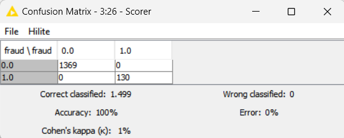
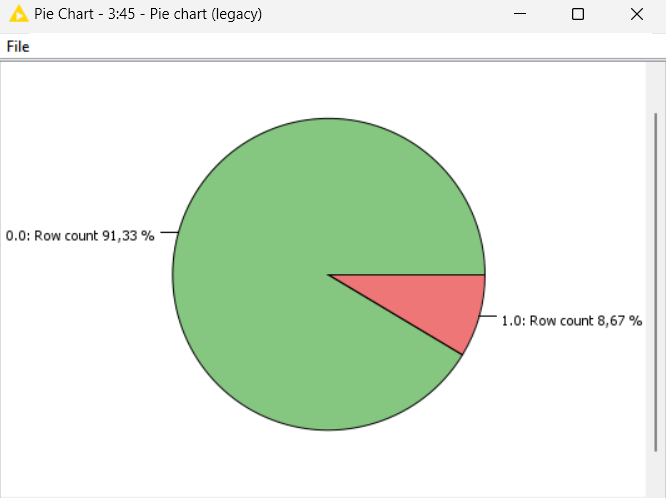
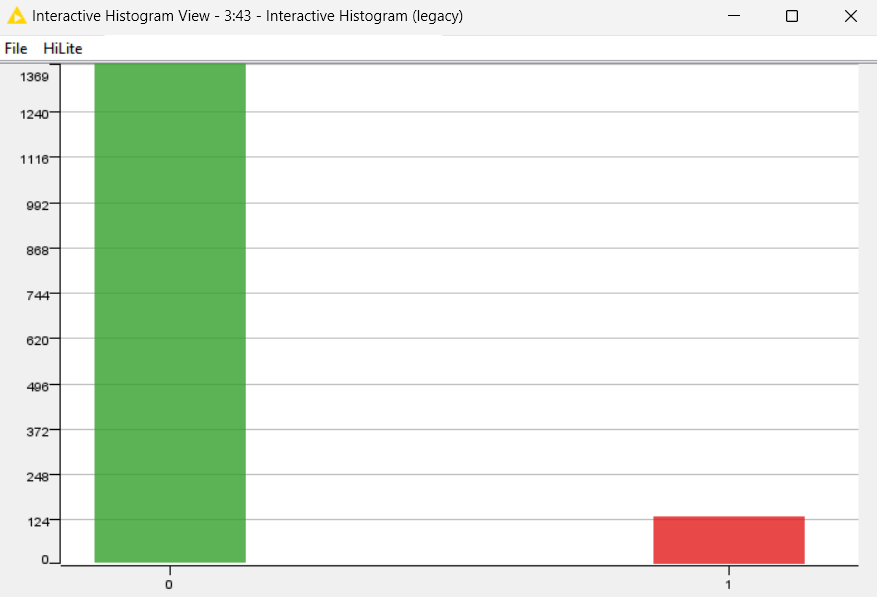

Esse dataset foi fornecido por uma instituição financeira não especificada e contém informações detalhadas sobre transações financeiras por cartão de crédito, as quais foram verdadeiras ou fraudulenta, tanto presenciais quanto online.
Atributos da base de dados
- distance_from_home: Distância entre o local da transação e a residência do titular do cartão. Transações realizadas longe de casa podem ser um indicativo de fraude. A unidade está em quilômetros.
- distance_from_last_transaction: Distância entre o local da última transação e o local da transação atual. Um grande aumento na distância entre transações pode sinalizar uma atividade suspeita. A unidade está em quilômetros.
- ratio_to_median_purchase_price: Esta variável é uma razão (proporção) e, portanto, não tem unidade. Ela representa a razão entre o preço de uma transação e o preço mediano de transações anteriores. Valores próximos a 1 indicam que o preço está próximo da mediana, enquanto valores muito maiores ou menores indicam desvios significativos.
- repeat_retailer: Indica se a transação foi realizada no mesmo varejista de uma transação anterior. Transações repetidas no mesmo local podem ser menos suspeitas. 1 se a transação foi feita no mesmo varejista; 0 caso contrário.
- used_chip: Indica se a transação foi feita utilizando o chip do cartão. O uso do chip geralmente é mais seguro que outras formas de pagamento. 1 se a transação foi autorizada com o uso de um PIN; 0 caso contrário.
- used_pin_number: Indica se a transação foi autorizada utilizando a senha. Transações com senha são mais seguras e menos propensas a serem fraudulentas. 1 se a transação foi autorizada com o uso de um PIN; 0 caso contrário.
- online_order: Indica se a transação foi feita online. Transações online têm um risco maior de fraude comparado a transações presenciais. 1 se a transação foi feita online; 0 caso contrário.
- fraud: Variável alvo, que indica se a transação foi considerada fraudulenta (1) ou não (0).
Base de dados
| distance_from_home | distance_from_last_transaction | ratio_to_median_purchase_price | repeat_retailer | used_chip | used_pin_number | online_order | fraud |
|---|---|---|---|---|---|---|---|
| 3,803057351 | 67,24108053 | 1,872949614 | 1 | 0 | 0 | 1 | 1 |
| 17,04338443 | 0,328273383 | 0,347203876 | 1 | 0 | 0 | 1 | 0 |
| 5,482982322 | 3,501975947 | 1,986467254 | 1 | 0 | 0 | 0 | 0 |
| 53,46555834 | 0,088406625 | 0,204612702 | 1 | 0 | 0 | 1 | 0 |
| 3,216044756 | 17,14473592 | 1,788833243 | 1 | 1 | 0 | 1 | 0 |
| 15,69498554 | 175,9891815 | 0,855622829 | 1 | 0 | 0 | 1 | 1 |
| 85,83725334 | 1,035117876 | 0,868295614 | 1 | 1 | 0 | 1 | 0 |
| 35,26648271 | 0,085185008 | 0,174184253 | 1 | 1 | 0 | 1 | 0 |
| 56,59109468 | 0,718385891 | 0,736883111 | 1 | 0 | 0 | 1 | 0 |
| 67,59186117 | 1,612995562 | 0,207043005 | 1 | 1 | 0 | 0 | 0 |
| 4,426862416 | 5,144466644 | 2,323604269 | 1 | 0 | 0 | 1 | 0 |
| 26,71146202 | 1,552008126 | 4,603600688 | 1 | 1 | 0 | 1 | 1 |
| 10,66447372 | 1,565769086 | 4,886520843 | 1 | 0 | 0 | 1 | 1 |
| 202,7574416 | 0,275015145 | 0,775548534 | 1 | 0 | 1 | 1 | 0 |
| 13,05847051 | 0,256084064 | 1,001254294 | 1 | 0 | 0 | 0 | 0 |
| 83,19190905 | 0,974245099 | 2,204589077 | 1 | 1 | 0 | 1 | 0 |
| 31,89235267 | 0,120352361 | 0,348585634 | 1 | 0 | 0 | 1 | 0 |
KNN
A classificação será feita pelo algoritmo KNN (K-Nearest Neighbors/K-ésimo Vizinho mais Próximo).


